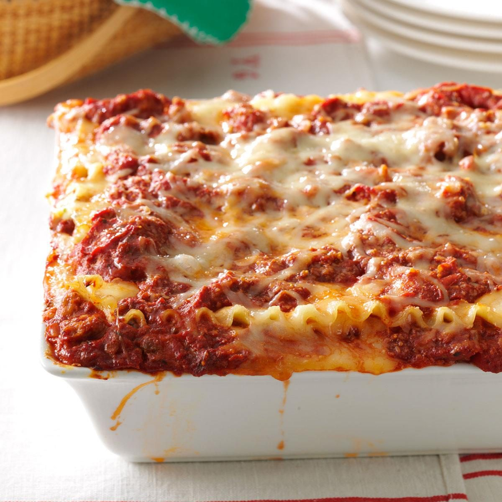

The Chief's special Lasagna

The Chief's Special Lasagna is what make the world famous Italian village of Lasagnata (Toscana) proud.
The Chief cultivates the best pasta in his garden to make the dish. A good soil and a lot of sun, that's the secret for
a succulent pasta, and that's why Lasagnata (Toscana) is the only place where you can eat the Chief's Special.
Ingredients list
For eight people who eat like four, you'll need:
- A dozen eggs, rounded to the closest ten
- Two kilograms of Lasagnata-cultivated pasta
- 500 ml of crème fraîche
- Some beef, just like the Chief has with the concurrent cook in the restaurant next town (Spaghettio, also located in Toscana)
Instructions
- Go to Lasagnata (Toscana)
- Ask the Chief about his secret recipe
- Get punched in the face
- Actually decide to book a table and eat the dish made by the Chief instead of trying to replicate it (it's impossible to do so anyway)